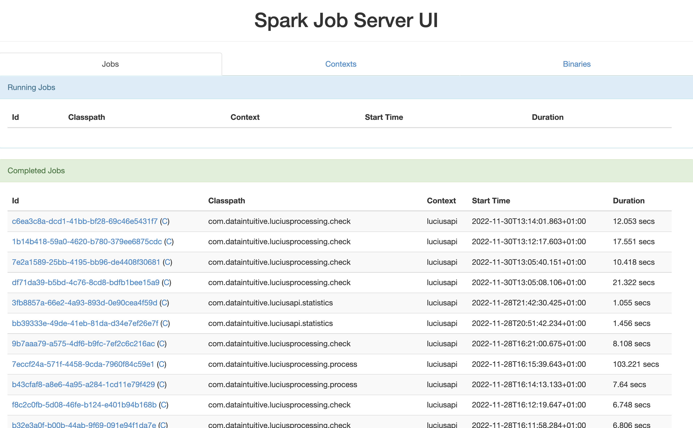

Tips
Spark jobserver console
Connect to the URL of the spark-jobserver instance in your environment. If you don’t know what that is, but you’re LuciusOperations toolbox has been configured correctly, you can retrieve that information from the output of utils/processing/check -h. The first argument in the help message is --endpoint and the default value for it is the URL you need:
utils/processing/check -h | head -8Open a browser tab and connect to this URL, you should see a screen similar to the one below.

There are three tabs here:
- Jobs: to retrieve a list of recently run jobs split in 3 ‘states’: Running, Completed and Failed.
- Contexts: to retrieve a list of contexts that are services from this jobserver instance. This should correspond to the context created using
utils/processing/create_context. - Binaries: this tab lists the JAR files that have been uploaded using
utils/processing/upload_jar.
Clicking on the the job link in the Jobs tab, you get the JSON result of the job. The (C) link retrieves the configuration that was used for this job.
If you know the job number, you could alternatively open the job page directly:
<endpoint>/jobs/<jobID>Running remotely
In many cases, we will run the LuciusOperations on the same instance that the spark jobserver itself is running. This means that the endpoint to connect to will often be:
http://localhost:8090Since the spark jobserver is a REST service, you don’t have to be logged in via a remote session to this instance itself. If you know the URL of the spark jobserver, it’s easy to run the tools with that:
utils/processing/check --endpoint https://...Alternatively, you can add the following line to the _viash.yaml file and run bin/build.sh again:
.functionality.arguments[.name == '--endpoint'].default := 'https://...'This is a very handy way to verify if the backend of Lucius is still running:
utils/api/check --endpoint https://...Getting job output when the request times out
Sometimes, the following message or something similar can be returned:
{
"status": "ERROR",
"result": {
"message": "Ask timed out on [Actor[akka://JobServer/user/context-supervisor/luciusapi#-1556520586]] after [10000 ms]. Sender[null] sent message of type \"spark.jobserver.JobManagerActor$StartJob\".",
"errorClass": "akka.pattern.AskTimeoutException",
"stack": "akka.pattern.AskTimeoutException: Ask timed out on [Actor[akka://JobServer/user/context-supervisor/luciusapi#-1556520586]] after [10000 ms]. Sender[null] sent message of type \"spark.jobserver.JobManagerActor$StartJob\".\n\tat akka.pattern.PromiseActorRef$$anonfun$1.apply$mcV$sp(AskSupport.scala:604)\n\tat akka.actor.Scheduler$$anon$4.run(Scheduler.scala:126)\n\tat scala.concurrent.Future$InternalCallbackExecutor$.unbatchedExecute(Future.scala:601)\n\tat scala.concurrent.BatchingExecutor$class.execute(BatchingExecutor.scala:109)\n\tat scala.concurrent.Future$InternalCallbackExecutor$.execute(Future.scala:599)\n\tat akka.actor.LightArrayRevolverScheduler$TaskHolder.executeTask(LightArrayRevolverScheduler.scala:329)\n\tat akka.actor.LightArrayRevolverScheduler$$anon$4.executeBucket$1(LightArrayRevolverScheduler.scala:280)\n\tat akka.actor.LightArrayRevolverScheduler$$anon$4.nextTick(LightArrayRevolverScheduler.scala:284)\n\tat akka.actor.LightArrayRevolverScheduler$$anon$4.run(LightArrayRevolverScheduler.scala:236)\n\tat java.lang.Thread.run(Thread.java:750)\n"
}
}It means the synchronous job timed out. It does not mean the job is not running or was stopped. In order to know what happened to the job, one can use either the CLI or the spark-jobserver console.
Using Spark-Jobserver to get information about jobs
As discussed above, it’s possible to connect to the spark-jobserver console in order to get a list of recently run jobs and their results.
Using the CLI to get information about jobs
From the CLI, the approach is different. The main difference is that we first have to retrieve the list of jobs but can not simply click on the last job in the list.
Alternative, with the use of jq and optionally HTTPie, this can be simplified:
http localhost:8090/jobs | jq 'first'The http command in this example can be replaced by curl. If jq is not installed on your system, a simple |head may suffice to get the job id of the last job.
By copy/pasting the job id, we can request the result of one specific job.
http localhost:/8090/jobs/<jobId>The following is a one-liner based on HTTPie and jq:
http localhost:8090/jobs | jq 'first' | jq -r '.jobId' | xargs -I{} http localhost:8090/jobs/{}A tool in the LuciusOperations toolbox will be created in the near future, allowing to query the jobs easily and retrieve the result for the last job.